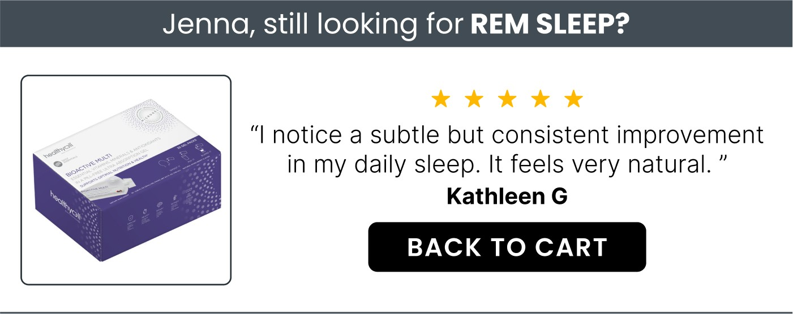
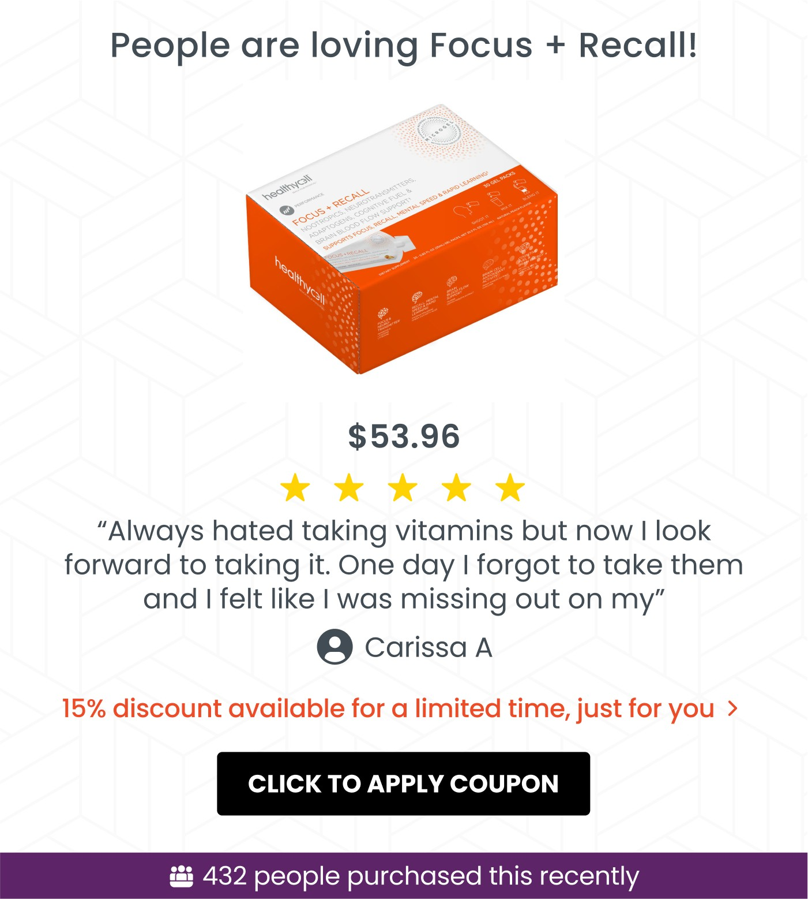

HealthyCell · United States
A/B tested across 9 campaigns over 30 days. Every metric moved.
About
Healthycell is a leading US-based health supplement brand, known for its science-backed, high-quality products. They partnered with me to improve their email performance, enhance customer engagement, and drive higher retention rates.
Challenge faced
Healthycell had a very solid foundation with their email marketing. They wanted to utilise my expertise to further optimise their email campaigns. They needed to increase the click rates of their email campaigns, boost the number of orders and subscription orders, and strengthen their loyalty program.
The solution
I implemented a site-action block using RetainIQ widgets in Healthycell's campaign emails. This block displayed recently abandoned or browsed products, offering a personalised touch to each recipient and encouraging them to complete their purchase.

To build urgency and drive conversions, I integrated social signals into the emails and used hero images that displayed highly relevant product photos. This visual strategy helped convey reliability and attract attention, particularly during new product launches.

I developed a targeted approach to increase loyalty program adoption. This included identifying subscribers with unused loyalty points and reminding them to utilise these points. I also crafted content that explained how customers could use their loyalty points to try new products at a reduced cost, making the loyalty program more appealing and accessible.
I used RetainIQ dynamic blocks to target users with low intent of conversion to convey social proof and build trust, especially for first-time buyers. Additionally, these users were allocated a first-time discount which was continuously promoted in all campaigns as a reminder.
Results produced
What this meant to the brand